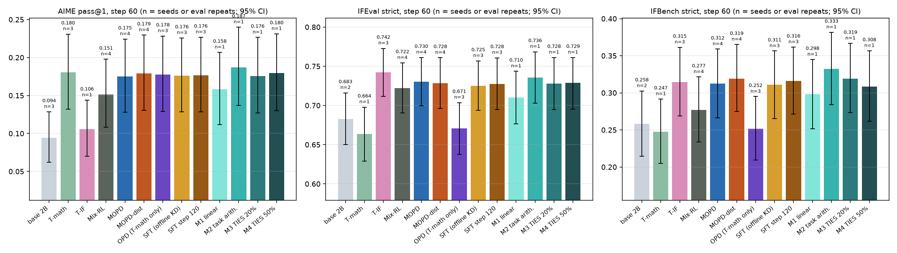
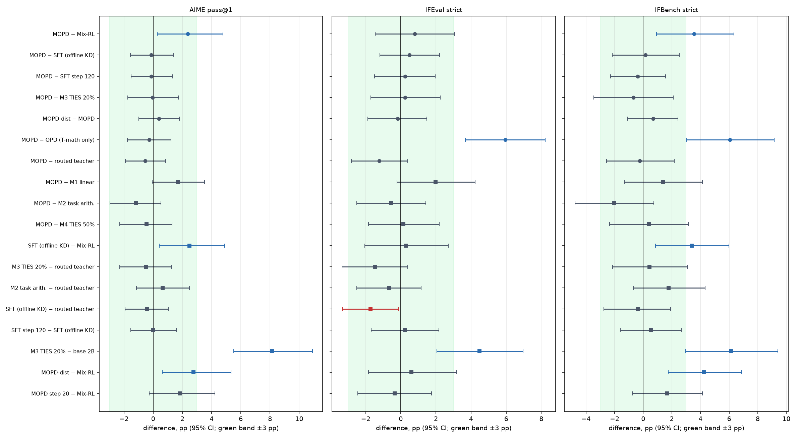
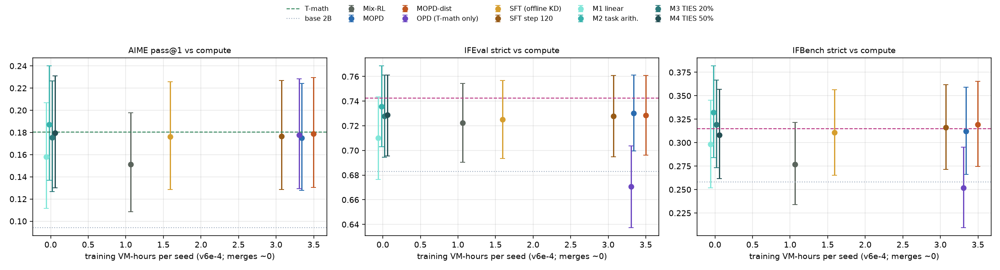
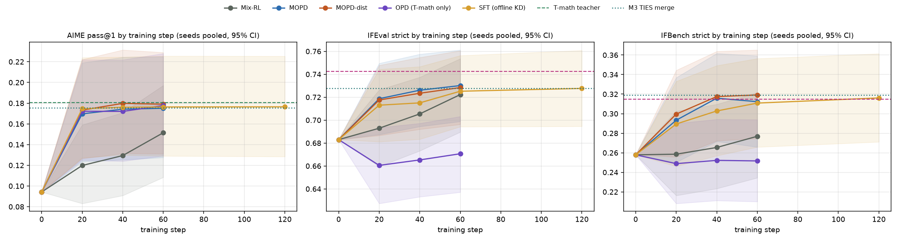
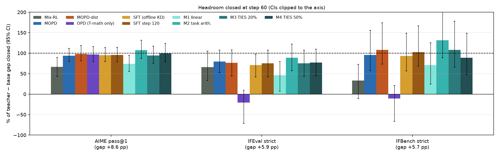
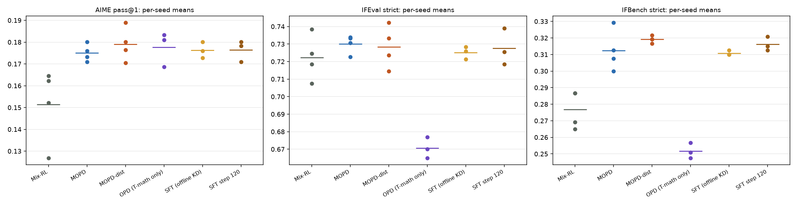

TPU Builders study
When is on-policy distillation worth it?
We distilled a math teacher and an instruction-following (IF) teacher into one Qwen3.5-2B student with multi-teacher on-policy distillation (MOPD). We compared it against joint RL, offline distillation and weight merging. Everything ran on Google TPU v6e-4 with TorchTPU + vLLM.
Paper: arXiv link comingCode (Apache-2.0) →
Same machines, recipe and AIME eval as the companion study: Async vs sync RL on TPU v6e →
TL;DR
- Routing is the robust effect. Distilling from the math teacher alone on every prompt learns nothing on IF. MOPD, which sends each prompt to its own domain's teacher, is +6.0 pp better on IFEval and +6.1 pp on IFBench (Holm-corrected p < 0.001 for both).
- MOPD reaches both teachers. It is equivalent (within ±3 pp) to the math teacher on AIME and to the IF teacher on IFEval and IFBench.
- Two cheaper baselines match MOPD.
- Offline distillation (SFT on the same teachers' samples) is equivalent to MOPD on all three benchmarks, at matched learner tokens and at matched VM-hours. It needs half the accelerator time per run.
- A task-arithmetic merge of the two teachers, with no training at all, is equivalent on AIME and IFEval and 2.0 pp higher on IFBench (not significant).
- MOPD's lead over joint RL (Mix-RL) is smaller than the 2-seed run showed. With 4 seeds, only IFBench survives correction: +3.5 pp. On AIME the gap is +2.4 pp but not significant after Holm, and IFEval is a tie.
- Why the cheap baselines hold up here: the teachers sit very close to the student. The starting per-token KL is about 0.02 nats, and only about 15% of the teachers' weight updates are nonzero in bf16.
- Total cost about $596 over 88 VM-hours: the pilot, the main study and the paper extension.
Updated for the paper. An earlier version of this page reported 2 seeds and no offline or merge baselines. Its headline (MOPD clearly beats Mix-RL) did not hold up with 4 seeds and the added baselines.
What is MOPD
Multi-teacher on-policy distillation (MOPD) merges several specialist models into one. The student samples its own answers, and each answer is scored token by token by the teacher for that prompt's domain, here a math teacher or an IF teacher. The student is then pushed toward that teacher's distribution (lower reverse KL), so one model picks up every specialist's skill.
The cheaper alternatives are offline distillation, which trains on the teachers' own samples, and weight merging, which adds the teachers' weight changes together with no training.
Results at a glance
Step-60 scores with 95% CIs:
- MOPD, MOPD-dist and Mix-RL pool 4 seeds; OPD and SFT pool 3; merges are single evaluations.
- AIME is pass@1 on 136 problems × 16 samples, IFEval strict prompt accuracy on 541 × 4 and IFBench strict accuracy on 300 × 4.
- The CIs come from a hierarchical bootstrap over problems, seeds and samples (10,000 draws).
| Model | Runs | AIME pass@1 | IFEval strict | IFBench strict |
|---|---|---|---|---|
| Base Qwen3.5-2B | 3 / 2 / 2 evals | 9.42% [6.2, 12.9] | 68.3% [65.0, 71.6] | 25.8% [21.5, 30.2] |
| T-math teacher | 3 / 1 / 1 evals | 18.05% [13.2, 23.1] | 66.4% [62.9, 69.8] | 24.8% [20.5, 29.2] |
| T-IF teacher | 1 / 3 / 3 evals | 10.57% [7.0, 14.4] | 74.3% [71.2, 77.3] | 31.5% [26.9, 36.1] |
| MOPD | 4 seeds | 17.51% [12.8, 22.4] | 73.0% [70.0, 76.1] | 31.2% [26.6, 35.9] |
| MOPD-dist (exact, full vocab) | 4 seeds | 17.90% [13.1, 23.0] | 72.8% [69.6, 76.1] | 31.9% [27.5, 36.5] |
| SFT on teacher samples, step 60 | 3 seeds | 17.63% [12.9, 22.6] | 72.5% [69.4, 75.7] | 31.1% [26.5, 35.6] |
| SFT on teacher samples, step 120 | 3 seeds | 17.65% [12.9, 22.7] | 72.8% [69.5, 76.1] | 31.6% [27.1, 36.2] |
| M2 task-arithmetic merge | 1 eval | 18.70% [13.7, 24.0] | 73.6% [70.3, 76.8] | 33.3% [28.4, 38.2] |
| M3 TIES merge, 20% density | 1 eval | 17.56% [12.7, 22.7] | 72.8% [69.5, 76.1] | 31.9% [27.3, 36.7] |
| M4 TIES merge, 50% density | 1 eval | 17.97% [13.0, 23.1] | 72.9% [69.5, 76.1] | 30.8% [26.2, 35.7] |
| M1 linear average | 1 eval | 15.81% [11.2, 20.7] | 71.0% [67.7, 74.4] | 29.8% [25.2, 34.5] |
| Mix-RL (GRPO, math + IF) | 4 seeds | 15.14% [10.8, 19.8] | 72.2% [69.1, 75.4] | 27.7% [23.4, 32.1] |
| OPD from T-math only | 3 seeds | 17.77% [12.9, 22.8] | 67.1% [63.7, 70.4] | 25.2% [20.9, 29.5] |

The comparisons that matter
Paired differences at step 60, in pp. The CIs are paired by problem, and Holm correction covers the 7 primary contrasts per benchmark.
- Bold: significant after Holm.
- ≈: equivalent within ±3 pp (TOST, 90% CI in braces).
| Contrast | AIME | IFEval | IFBench |
|---|---|---|---|
| MOPD − OPD (T-math only): routing | −0.26 {−1.48, +0.97} ≈ | +5.95 [+3.69, +8.23] | +6.06 [+3.04, +9.15] |
| MOPD − routed teacher | −0.54 {−1.69, +0.64} ≈ | −1.23 {−2.58, +0.09} ≈ | −0.24 {−2.20, +1.77} ≈ |
| MOPD − SFT@60 (tokens matched) | −0.12 {−1.31, +1.15} ≈ | +0.49 {−0.92, +1.91} ≈ | +0.15 {−1.80, +2.12} ≈ |
| MOPD − SFT@120 (VM-h matched) | −0.14 {−1.29, +1.06} ≈ | +0.25 {−1.20, +1.68} ≈ | −0.38 {−1.97, +1.26} ≈ |
| MOPD − M2 task arithmetic | −1.19 {−2.65, +0.28} ≈ | −0.55 {−2.22, +1.10} ≈ | −2.02 [−4.77, +0.75] |
| MOPD − M3 TIES 20% | −0.05 {−1.46, +1.44} ≈ | +0.23 {−1.39, +1.93} ≈ | −0.69 {−3.00, +1.62} |
| MOPD − Mix-RL | +2.37 [+0.29, +4.77] | +0.79 {−1.07, +2.74} ≈ | +3.54 [+0.94, +6.33] |
| MOPD-dist − MOPD | +0.39 {−0.76, +1.55} ≈ | −0.17 {−1.61, +1.22} ≈ | +0.69 {−0.77, +2.17} ≈ |
- Mix-RL on AIME. The gap has p = 0.024 uncorrected but a Holm-adjusted p of 0.17.
- Why the Mix-RL gap shrank. The two extra Mix-RL seeds scored 16.2% and 16.5% on AIME, against 12.7% and 15.2% for the first two. Mix-RL is the most seed-sensitive arm: its per-seed AIME SD is 1.7 pp, against 0.4 pp for MOPD.
- Task-arithmetic merge on IFBench. M2 is 2.0 pp higher there, which is neither significant nor equivalent.

Accuracy per unit of compute
At equal accuracy, the merges cost nothing and SFT needs about half of MOPD's VM-hours.
| Arm (per seed, to step 60) | Chips | s/step | Learner tokens | VM-h | $ |
|---|---|---|---|---|---|
| Merges M1–M4 | CPU | – | 0 | ≈ 0 (seconds) | ≈ 0 |
| Mix-RL | 2 | 115 | 11.0 M | 1.06 | 5.74 |
| SFT on teacher samples, step 60 | 2 | 179 | 20.2 M | 1.59 | 8.59 |
| SFT on teacher samples, step 120 | 2 | 179 | 40.3 M | 3.07 | 16.59 |
| MOPD | 4 | 183 | 20.4 M | 3.34 | 18.03 |
| MOPD-dist | 4 | 193 | 20.5 M | 3.50 | 18.89 |
| OPD (T-math only) | 4 | 183 | 20.7 M | 3.30 | 17.84 |
VM-h is learner wall time times the share of the v6e-4 the run used, and $ is VM-h × $5.40 (the Flex list price). s/step is the median. Teacher training is shared by every arm except Mix-RL and is not included.


Why the cheap baselines work here
- The teachers are close to the student. The per-token reverse KL from student to routed teacher averages about 0.02 nats over the first 5 steps. SFT's forward KL on the teachers' samples falls from 0.018 to 0.0015 by step 60. So the teachers' samples are ones the student could almost have produced, which leaves little exposure bias for on-policy training to fix.
- The teachers are weak. T-math is only 8.6 pp above base on AIME; T-IF is 6.0 pp (IFEval) and 5.7 pp (IFBench) above base. Any method that transfers most of a small gap ends up within ±3 pp of the others.
- The weight updates are tiny and sparse. Only about 14.6% of the teachers' weight-change entries are nonzero after bf16 rounding. Two such updates barely overlap, so adding them (task arithmetic) causes little interference, and TIES trimming has almost nothing left to trim.
- The advantage clip never binds. At ±5 it touches about 1.3e-5 of MOPD tokens.
When on-policy distillation should win
We expect the ranking to change with:
- more distant teachers or weaker students;
- much longer teacher training, which makes the weight updates dense and overlapping;
- teachers 20+ pp above base;
- more domains;
- long thinking-mode outputs.
The paper proposes a test for each. Until those are run, for same-origin, short-horizon specialists: try task arithmetic first (it is free), then offline distillation, and reserve on-policy distillation for when both fall short.
Share of the teacher gap closed
How much of the base-to-teacher gap each arm closes at step 60, with 95% CIs. The teacher is T-math for AIME and T-IF for IFEval and IFBench; 100% means teacher level.
| Arm | AIME (gap +8.6 pp) | IFEval (gap +6.0 pp) | IFBench (gap +5.7 pp) |
|---|---|---|---|
| MOPD | 94% [79, 112] | 79% [52, 107] | 96% [58, 155] |
| MOPD-dist | 98% [81, 118] | 76% [44, 108] | 108% [74, 174] |
| SFT, step 60 | 95% [79, 114] | 71% [42, 98] | 93% [57, 149] |
| SFT, step 120 | 95% [79, 114] | 75% [42, 107] | 102% [68, 167] |
| M2 task arithmetic | 108% [87, 131] | 89% [57, 122] | 131% [89, 214] |
| M3 TIES 20% | 94% [75, 117] | 75% [43, 108] | 108% [66, 178] |
| M4 TIES 50% | 99% [79, 124] | 77% [44, 110] | 89% [48, 149] |
| M1 linear average | 74% [55, 95] | 46% [7, 79] | 71% [25, 126] |
| Mix-RL | 66% [43, 89] | 66% [33, 105] | 33% [−11, 73] |
| OPD (T-math only) | 97% [79, 116] | −21% [−71, 10] | −11% [−67, 21] |
The gaps are small, so the ratios have wide CIs. The linear average halves each teacher's weight change, which is why it closes less.

MOPD vs MOPD-dist
Equivalent within ±3 pp on all three benchmarks, for about 3.5% more step time. The cheaper sampled-token form is enough at this scale.
- The two losses. MOPD scores only the sampled token: the per-token advantage is the teacher-minus-student log-prob, clipped at ±5. MOPD-dist computes the exact reverse KL to the routed teacher over all 248,320 vocabulary entries at every position.
- Accuracy. With 4 seeds, MOPD-dist − MOPD is +0.39, −0.17 and +0.69 pp on AIME, IFEval and IFBench, and all three 90% CIs lie inside ±2.2 pp.
- Speed. Steps took 205 s against 198 s on a mean basis (about 3.5% slower), not the 20% the plan modelled.
- How the exact loss stays cheap. The teacher ships its final hidden state (bf16, through /dev/shm) and the learner rebuilds its logits. The rebuilt logits matched the teacher's own to 0.0 at every step.
Cost
All runs used Flex v6e-4 in europe-west4-a at $5.40/h. Spot was never granted, and on-demand was never requested.
| Phase | VM-hours | Ledger | Off-ledger (est.) | Total |
|---|---|---|---|---|
| Pilot (30 steps, 1 seed, gates) | 11.1 | $60.06 | ≈ $18 | ≈ $78 |
| Main study (2 seeds, teachers) | 34.2 | $184.48 | ≈ $33 | ≈ $217 |
| Paper extension (2 more seeds, SFT, merges, re-evals) | 42.8 | $231.11 | ≈ $69 | ≈ $301 |
| Total | 88.1 | $475.65 | ≈ $120 | ≈ $596 |
The ledger counts VM time at the Flex list price. Off-ledger cost is cross-region GCS transfer (estimated at $0.08/GB): the bucket is in asia-northeast1 and the VMs ran in europe-west4. Most of it is compile-cache pulls, which grew from 33 GB to 208 GB over the program.
The stored teachers
All four teachers are kept under gs://qrl-bc4a-compile-cache-tpu-builders-509006/teachers/qwen3.5-2b/, with a GCS temporary hold on every object. Each directory holds:
- a loadable Hugging Face model (bf16 safetensors, config, tokenizer);
- teacher.json with scores and recipe;
- SHA256SUMS and a COMPLETE marker.
A public Hugging Face release under Apache-2.0 is planned.
| Teacher | Directory | AIME | IFEval | IFBench |
|---|---|---|---|---|
| T-math, 60 steps (used) | math-grpo-k1is-60steps-s0-20261124-9dfe9c2/ | 18.05% | 66.4% | 24.8% |
| T-IF, 60 steps (used) | if-grpo-k1is-60steps-s0-20261124-9dfe9c2/ | 10.57% | 74.3% | 31.5% |
| T-math, 30 steps (pilot) | math-grpo-k1is-30steps-s0-20261124-d909884/ | 15.7% | 66.7% | 27.9% |
| T-IF, 30 steps (pilot) | if-grpo-k1is-30steps-s0-20261124-d909884/ | 9.5% | 71.3% | 28.1% |
The 60-step in-domain scores pool 3 eval repeats (T-math AIME; T-IF IFEval and IFBench); the other cells are single evals.
Caveats
- Small scale. One 2B student, two domains, and two teachers, each trained once with one seed. Teacher-seed variance is untested.
- Weak teachers limit power. The teacher gaps are +5.7 to +8.6 pp, so the ±3 pp margin is 35–53% of the gap.
- Merges have no seed level. Each merge is a single evaluation, so its CI covers problem and sample noise only.
- The distant-teacher arm is untested. In the pilot, Qwen3.5-9B started at 13.4× the same-origin KL, over the gate limit, so the study ran OPD from T-math only instead.
- Pure distillation. MOPD here has no outcome-reward term, which MiMo adds by default. Evals are non-thinking, with answers capped at 6,144 tokens.
- Two analyses disagree on some small effects. A Bayesian mixed GLM, which treats samples as independent and has no seed level, calls the AIME gap to Mix-RL significant and puts MOPD slightly below the teachers. The bootstrap does not. Both are reported in the paper.
- Policy entropy drifts upward in every distillation arm, from about 0.46 to about 0.52 over 60 steps, mostly on math prompts. It never fails the gate.
References
- MOPD: Multi-Teacher On-Policy Distillation for Capability Integration in LLM Post-Training, arXiv:2606.30406 · Xiaomi project page.
- Xiaomi LLM-Core, MiMo-V2-Flash Technical Report, arXiv:2601.02780, §4.1 and §4.4 (MOPD definition and loss).
- Open-MOPD (Tsinghua AIR + ByteDance Seed), open code and SmolLM3-3B checkpoints · arXiv:2608.19098.
- Kim & Rush, Sequence-Level Knowledge Distillation, arXiv:1606.07947 (the offline baseline).
- Ilharco et al., Editing Models with Task Arithmetic, arXiv:2212.04089 · Yadav et al., TIES-Merging, arXiv:2306.01708.
- XiaomiMiMo/MiMo-V2-Flash: model weights; no MOPD training code.
MOPD2, the later variant with teacher-prefix and SFT-prefix streams described in the MiMo-V2.6-Flash-MOPD model card, is out of scope here.
Appendix
Per-seed scores and seed spread

Per-seed SD of step-60 scores, in pp (AIME / IFEval / IFBench):
- Mix-RL: 1.7 / 1.3 / 1.1.
- MOPD: 0.4 / 0.5 / 1.2.
- SFT: 0.4 / 0.4 / 0.1.
Both distillation forms are more reproducible than RL, but this does not separate on-policy from offline.
Training dynamics (main study, seeds s0–s1)

- Reverse KL falls about 30× over 60 steps.
- Single-teacher OPD carries almost no signal on the other domain: T-math's KL on IF prompts is about 0.002, against 0.022–0.038 for T-IF.
- Distillation trains every sampled sequence (about 20.5 M tokens per run), so the learner is the bottleneck: about 3% learner idle against about 46% generator idle.
Pilot go/no-go gates
One seed of MOPD, MOPD-dist and Mix-RL plus both teachers, at 30 steps. All seven gates passed.
| Gate | Result | Numbers |
|---|---|---|
| 1. End to end, learner idle < 10% | PASS | 30/30 steps plus final evals; learner idle 6.2% (MOPD), 6.1% (MOPD-dist). |
| 2. s/step inside the modelled P90 | PASS | MOPD 207.9 s (P90 222), MOPD-dist 214.8 s (P90 272). |
| 3. MOPD-dist fits at --mb-tokens 8192; hidden-state loss matches direct logits within 1e-3 | PASS | Ran at 8192; difference 0.0 (mean and max) at every step. |
| 4. Reverse KL falls, entropy holds | PASS | MOPD KL 0.0088 → 0.0006, MOPD-dist 0.0097 → 0.0010; entropy 0.42 → 0.40. |
| 5. 9B starting KL measured | PASS, switch triggered | 9B 0.194, 4B 0.178, same-origin 0.0144 (13.4×) → single teacher switched to T-math on every prompt. |
| 6. Teacher export round trip, hold, delete refusal | PASS | AIME 15.2% vs logged 15.7%, IFEval 71.8% vs 71.3%; 0 missing / 0 mismatched of 320 tensors; 42/42 objects held; deletes of teachers/ refused. |
| 7. Re-price the full plan | PASS | P90 36.7 VM-h = $198 on the ledger, under $255. Actual: $184.48. |
Method
- Student and data. Qwen3.5-2B.
- Each step samples 8 math prompts (AIME 1983–2023) and 8 IF prompts (RLVR-IFeval).
- Each prompt gets 8 answers of up to 6,144 tokens, at temperature 1.
- Every arm sees the same prompt stream per seed.
- AdamW at a learning rate of 1e-6.
- All runs are async lag 1 with truncated importance sampling (cap 2), the recipe the async vs sync study recommended.
- Teachers. Same-origin specialists, trained from the same base with GRPO for 60 steps at 16 prompts per step.
- T-math: AIME prompts, exact \boxed{} match reward.
- T-IF: RLVR-IFeval prompts, verifiable instruction-checker reward.
- Arms.
- MOPD: each answer goes to its domain's teacher. The per-token advantage is sg[log π_teacher − log π_student], clipped at ±5, in the policy-gradient loss with truncated IS. No outcome reward.
- MOPD-dist: exact reverse KL to the routed teacher over the full vocabulary.
- Mix-RL: GRPO on the same mixed batches, outcome reward only.
- OPD from T-math only: MOPD's loss, with T-math scoring every prompt.
- SFT on teacher samples: the generator samples from the routed teacher, and the learner minimises cross-entropy on those samples. It is evaluated at step 60 (learner tokens matched) and step 120 (VM-hours matched).
- Merges, built on CPU in seconds: M1 linear average, M2 task arithmetic (λ = 1), M3 TIES at 20% density (pre-registered primary) and M4 TIES at 50%.
- Seeds. Four for MOPD, MOPD-dist and Mix-RL; three for OPD and SFT.
- Eval. AIME pass@1 on the async study's 136-problem set × 16 samples (AIME 2024–2026, BRUMO 2025, HMMT 2025–2026), IFEval strict prompt accuracy (541 × 4) and IFBench strict accuracy (300 × 4). Non-thinking mode.
- Statistics.
- Hierarchical bootstrap with 10,000 draws: resample problems, then seeds, then redraw each problem's outcomes from a binomial. Differences are paired by problem.
- TOST equivalence at ±3 pp, with a 90% CI.
- Holm correction over 7 primary contrasts per benchmark.
- A Bayesian mixed GLM as the robustness check.
- Code. rl/ in this repository, Apache-2.0. The training stack is in rl/qrl/, TPU orchestration in rl/tpu/, and the plans used are rl/tpu/mopd{pilot,full,paper}.json.